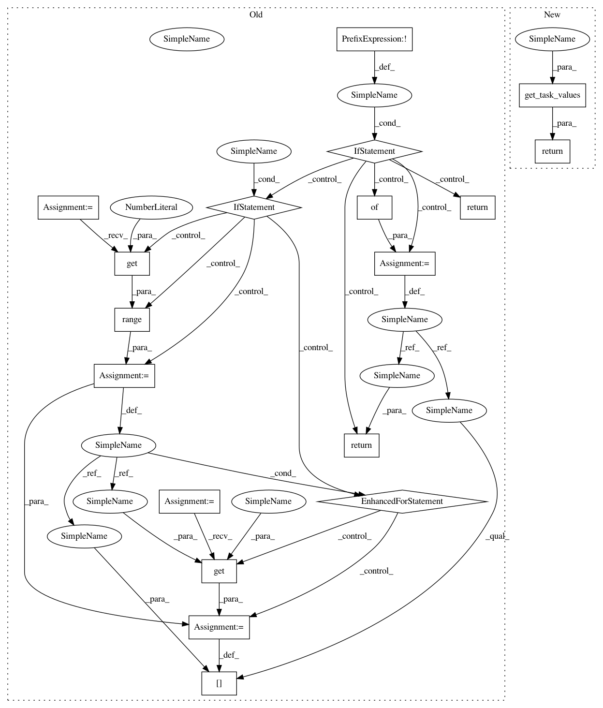

c392a78ec880d15a2f0f8aab48f1eb42f8766ad8,polyaxon_schemas/polyaxonfile/specification/utils.py,,get_task_job_affinities,#Any#Any#Any#Any#Any#,61
Before Change
affinities,
default_affinity,
task_type):
if not is_distributed:
return None
result_affinities = {}
if default_affinity:
for i in range(cluster.get(task_type, 0)):
result_affinities[i] = affinities.get(i, default_affinity)
return result_affinities
After Change
affinities,
default_affinity,
task_type):
return get_task_values(cluster=cluster,
is_distributed=is_distributed,
values=affinities,
default_value=default_affinity,
task_type=task_type)
In pattern: SUPERPATTERN
Frequency: 4
Non-data size: 18
Instances
Project Name: polyaxon/polyaxon
Commit Name: c392a78ec880d15a2f0f8aab48f1eb42f8766ad8
Time: 2018-07-26
Author: mouradmourafiq@gmail.com
File Name: polyaxon_schemas/polyaxonfile/specification/utils.py
Class Name:
Method Name: get_task_job_affinities
Project Name: polyaxon/polyaxon
Commit Name: c392a78ec880d15a2f0f8aab48f1eb42f8766ad8
Time: 2018-07-26
Author: mouradmourafiq@gmail.com
File Name: polyaxon_schemas/polyaxonfile/specification/utils.py
Class Name:
Method Name: get_task_job_resources
Project Name: polyaxon/polyaxon
Commit Name: c392a78ec880d15a2f0f8aab48f1eb42f8766ad8
Time: 2018-07-26
Author: mouradmourafiq@gmail.com
File Name: polyaxon_schemas/polyaxonfile/specification/utils.py
Class Name:
Method Name: get_task_job_node_selectors
Project Name: polyaxon/polyaxon
Commit Name: c392a78ec880d15a2f0f8aab48f1eb42f8766ad8
Time: 2018-07-26
Author: mouradmourafiq@gmail.com
File Name: polyaxon_schemas/polyaxonfile/specification/utils.py
Class Name:
Method Name: get_task_job_tolerations